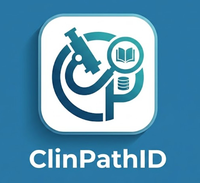

Solusi mencari sumber ilmiah yang simpel, valid, dan praktis
Cari artikel ilmiah via PubMed • Preview halaman pertama • Simpan referensi
v.0.1.0
Hadir sebagai sebuah inisiatif mandiri, aplikasi ini bertujuan menyederhanakan pencarian literatur ilmiah bagi para sejawat di bidang Patologi Klinik. Fokus utama adalah efisiensi akses menuju jurnal terindeks Scopus.
Mengingat aplikasi ini akan terus dikembangkan, masukan dari Anda sangatlah kami harapkan untuk menyempurnakan fitur-fitur di masa mendatang.
Sampaikan aspirasi Anda melalui tautan berikut:
Berikan Masukan →